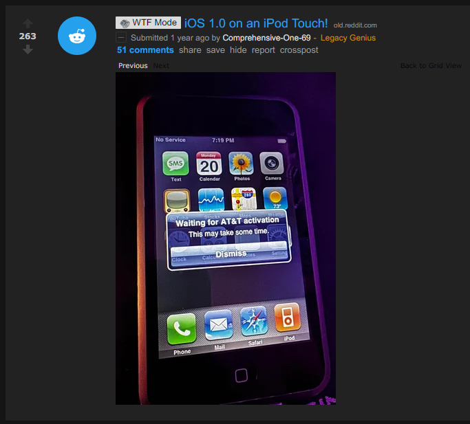
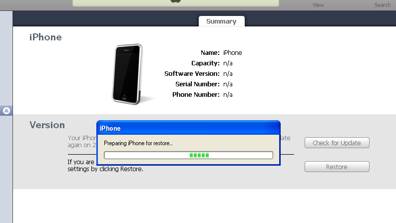
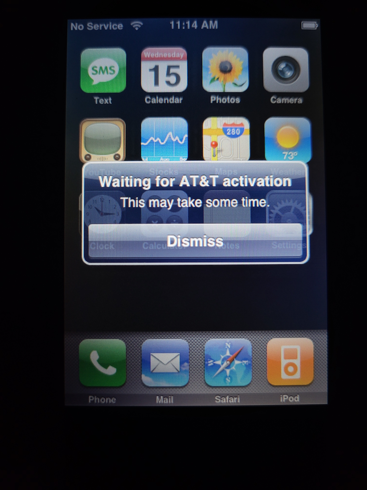
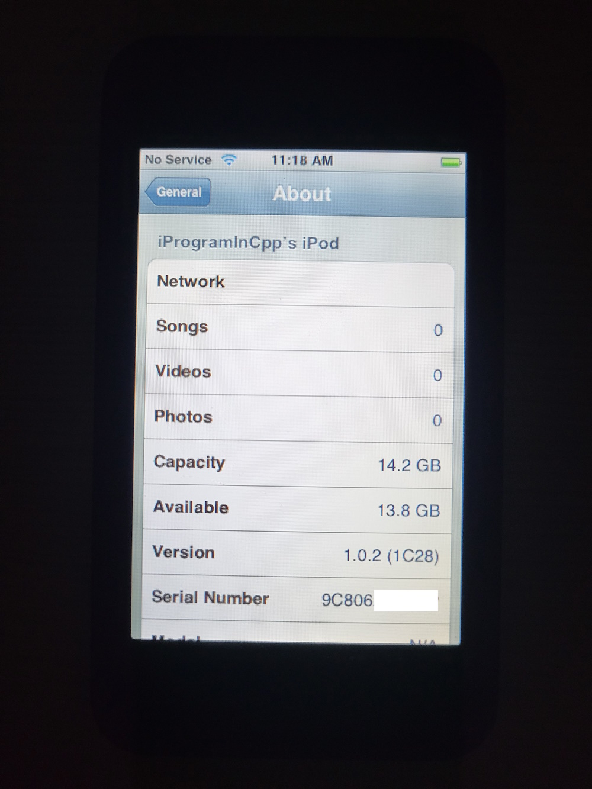

Running iPhone OS 1.0 on the 1st gen iPod touch
(Well, actually, it's 1.0.2, but shut up, it works slightly better than 1.0 proper)
Parts of this guide/tutorial/ramble thing are taken from this s5l8900 dualboot guide.
A few months ago I saw this post on r/LegacyJailbreak:

I found the person hanging around in bag.xml's Discord server, and decided to try to contact them so that I could replicate their method.
Things to keep in mind
Before you go out and perform this downgrade, remember that:
- You will be dual-booting iPhone OS 1.1.1 with 1.0.2
- You will need to put the device into recovery mode and switch back to 1.1.1 to charge the device, use USB, and/or use SSH
- Multitouch is sort of broken, and this is most obvious with the slide to unlock/poweroff gestures and the back button in Settings
- You cannot adjust the brightness. Only auto-brightness works
- Obviously, cellular functions and the camera won't work
- Just about the only actual feature that works is Wi-Fi, and that one only barely
- iPhone OS 1.0.2 is completely useless given these circumstances
First attempt
My first attempt at this task was to splice the 1.0.2 rootfs onto a 1.1 restore image. Obviously this doesn't work and will probably never work, so I gave up after a few hours of trying.
A side effect of one of these hacked-up ipsw images is that I got the iPod touch recognized as an iPhone temporarily:

Again, none of my restore images worked, but it was funny to see this.
Gathering information
Eventually I found the person who pulled it off initially on discord and decided to effectively rampage them with questions. (well, I may be exaggerating, and I hope they didn't feel that way!) So the summary of what I gathered was that:
- you have to restore the rootfs from 1.0.x to a new partition using a patched
asr, but they forgot exactly how - you have to use nvram
boot-argsto switch to the new rootfs and boot into it - you can use the iPhone OS 1.1.x activation tickets to activate iPhone OS 1.0.x, and it just works™
Additional notes:
- I couldn't find SSH ramdisks for iPhone OS 1.1.x, so you'll have to jailbreak the iPhone OS 1.1.x install and do the things on there
- You cannot use SSH ramdisks from iPhone OS 2.x/3.x, and especially not from Legacy iOS Kit or xpwn/PwnageTool, because they'll just wipe your precious NAND, which is annoying
And now, for a tutorial:
Restoring to iPhone OS 1.1.x
You need to use a Windows XP machine and iTunes 7.5. A VM will work too, but you need to configure the USB support in the VM so that it auto-mounts every Apple device. (look for the USB vendor ID of 0x05AC)
iTunes 7.5 is likely too outdated to communicate with your iPhone OS version (2.0 and greater will not communicate with it), so you need to put your device in DFU mode to restore. The software update servers for iPod touch are down, so you'll need to hold shift and restore an ipsw that way. (you can download them from ipsw.me)
iTunes 7.5 can also be used to activate your iPod touch, so leave it plugged in and let it activate. Now you're running iPhone OS 1.1.x!
Jailbreaking the fresh install
Note: My iPod touch is a 16 GB model running iPhone OS 1.1.1. Results may vary on other 1.1 versions so I recommend using 1.1.1 to make sure it works well.
The jailbreak will be using touchFree. I downloaded the executable from jailbreaklibrary.com, but be sure to scan the executable with virustotal and perform due diligence on the executable to make sure it's legit. I can't confirm nor deny that the page is currently legit, but it was when I looked at it.
Unfortunately, the url touchFree asks you to access on your iPod touch is invalid and no longer works. However, try my mirror of 4522.tif, it should work.
Start touchFree. Access a page that contains a working version of the libtiff exploit. Safari should now crash. Do not run it more than once, reboot if it doesn't work. Then click the button to proceed.
Next, you will need to reboot your iPod several times, do so everytime you're prompted.
Finally, you should see two new icons on your home screen: SMBPrefs and Installer. But you don't really need to care about those. You now have SSH access to the iPod.
SSH access
Find the IP address of your device. You can find it in the Wi-Fi menu in Settings, where you click the ">" arrow next to the Wi-Fi network you're connected to. The "IP Address" field is what you care about. (You can also find this IP address in your router's settings)
Then, use PuTTY (or whatever else) to connect to SSH. The SSH port is still 22, and the username and password are root and alpine.
NOTE: Early versions of SSH use a completely outdated key exchange protocol, so PuTTY will show you a warning, which you'll need to agree to, and modern versions of FileZilla will completely refuse to connect, so you'll need an older version of FileZilla.
Installing tools
You will need several tools from the 1.1.1 ramdisk:
/sbin/fsck_hfs/sbin/newfs_hfs/sbin/mount_hfs/usr/sbin/fdisk/usr/sbin/nvram
Additionally you will need a copy of umount, sync, and dd. These don't come with any ramdisks I checked, so I had to extract them from a prototype iPhone OS restore image. For legal reasons, I can't link you to one, but you can find it easily. You will need to use umount during this process.
You can use xpwntool to extract the raw ramdisk from its container:
xpwntool 022-3655-1.dmg extracted.dmg
Install the binaries to /usr/sbin, then chmod them to give them the executable flag:
/bin/chmod +x /usr/sbin/fdisk
/bin/chmod +x /usr/sbin/fsck_hfs
/bin/chmod +x /usr/sbin/newfs_hfs
/bin/chmod +x /usr/sbin/mount_hfs
/bin/chmod +x /usr/sbin/umount
/bin/chmod +x /usr/sbin/nvram
/bin/chmod +x /usr/sbin/sync
(I'd ask you to also copy asr, but I didn't need to use it.)
NOTE: The shell you have access to is very limited and has no features. (no redirection, no environment variable manipulation, no wildcards, and no PATH) So you will need to type the name of every single binary in full. (E.g. /bin/ls instead of just ls)
Back up the /var partition
First, do a backup of the /private/var directory. You will need to do this, because we're about to shrink the /var partition. Use the following command:
/usr/bin/tar -cf /private.tar --preserve /private/var
You can optionally save it somewhere, but it isn't required.
Now, unmount it:
/usr/sbin/umount -f /private/var
Editing the partition table to create another rootfs partition
Time to edit the partition table:
/usr/sbin/fdisk -e /dev/disk0
Run the print command inside fdisk. Your disk geometry should look something like this: (note, the number of sectors, block size, and geometry may differ depending on the capacity of your iPod touch)
8GB iPod touch:
Disk: /dev/disk0 geometry: 983/64/63 [3964928 sectors]
Sector size: 2048 bytes
Offset: 0 Signature: 0xAA55
Starting Ending
#: id cyl hd sec - cyl hd sec [ start - size]
------------------------------------------------------------------------
1: AF 0 1 1 - 1023 254 63 [ 63 - 76800] HFS+
2: AF 1023 254 63 - 1023 254 63 [ 76923 - 3887982] HFS+
3: 00 0 0 0 - 0 0 0 [ 0 - 0] unused
4: 00 0 0 0 - 0 0 0 [ 0 - 0] unused
16GB iPod touch:
Disk: /dev/disk0 geometry: 983/64/63 [3964928 sectors]
Sector size: 4096 bytes
Offset: 0 Signature: 0xAA55
Starting Ending
#: id cyl hd sec - cyl hd sec [ start - size]
------------------------------------------------------------------------
1: AF 0 1 1 - 1023 254 63 [ 63 - 76800] HFS+
2: AF 1023 254 63 - 1023 254 63 [ 76923 - 3887982] HFS+
3: 00 0 0 0 - 0 0 0 [ 0 - 0] unused
4: 00 0 0 0 - 0 0 0 [ 0 - 0] unused
WARNING: Do not touch partition 1, else you will need to restore and start over. This is the rootfs of your iPhone OS 1.1.x install.
Type edit 2. This edits the /var partition.
Do not change the type ID (leave it to 0xAF), and don't edit in CHS mode. Accept the offset it gives you, and take off about 80000 blocks or so from the suggested partition size.
Then, type edit 3. Type AF into the partition type ID, don't edit in CHS mode, accept the partition offset and size it gives you, and apply.
Lastly, type write to write the changes, and exit out of fdisk.
Sync a couple times to make sure everything is flushed:
/usr/sbin/sync
/usr/sbin/sync
/usr/sbin/sync
Check if disk0s2 was secretly relocated to disk0s4, because it happens for some reason:
/bin/ls /dev/disk0s4
If it does show up, you'll need to move it back:
/bin/mv /dev/disk0s4 /dev/disk0s2
/bin/mv /dev/rdisk0s4 /dev/rdisk0s2
Restore /private/var
And now, restore the backup you made earlier:
/usr/sbin/newfs_hfs /dev/disk0s2
/sbin/mount -t hfs /dev/disk0s2 /private/var
chdir /private/var
/usr/bin/tar -xvf /private.tar
/bin/ls /private/var/private/var
/bin/mv [list of subdirectories inside ./private/var] /private/var
/bin/rm -rf ./private
NOTE: wildcards will not work, so you'll need to type in every subdirectory inside ./private/var where the [list of subdirectories inside ./private/var] is located in the mv command.
Extract the raw hfsx partition from the rootfs inside the ipsw
You will need to use the readencrcdsa.py script in order to extract the rootfs from 1.0.2, so download it and install all its dependencies. Then, decrypt the rootfs:
python3 ./readencrcdsa.py [encrypted rootfs] --keydata [rootfs key] --save
You can find the rootfs decryption key easily on google, I won't link to it for legal reasons.
The resulting 694-5298-5-decrypted.dmg is a zlib compressed (UDZO) dmg file, so decompress it and extract partition #3 (Mac_OS_X):
dmg2img 694-5298-5-decrypted.dmg -p 3
This will save a 694-5298-5-decrypted.img file, which you'll need to upload to the iPod touch. I have uploaded it to the root of /private/var. You can use iFunbox for faster transfer after the jailbreak as it'll use USB instead of Wi-Fi, but scp/FileZilla works too.
Copy the extracted partition to the nand
To copy the extracted partition to the nand, run the following commands on your iPod touch:
/bin/dd if=/dev/zero of=/dev/rdisk0s3 bs=1048576
/bin/dd if=/private/var/694-5298-5-decrypted.img of=/dev/rdisk0s3 bs=1048576
/usr/sbin/sync
/usr/sbin/sync
/usr/sbin/sync
(Hint: you can use ctrl-T in the terminal to check for progress while dd is running)
This will put a valid HFS+ image on your iPod touch. Note that we sweep it with zeroes to make sure the fsck_hfs command won't be confused.
Then, run a check to fix up the file system:
/usr/sbin/fsck_hfs /dev/rdisk0s3
You should see this:
# /usr/sbin/fsck_hfs /dev/rdisk0s3
** /dev/rdisk0s3
** Checking HFS Plus volume.
** Detected a case-sensitive catalog.
** Checking Extents Overflow file.
** Checking Catalog file.
** Checking Catalog hierarchy.
** Checking volume bitmap.
** Checking volume information.
Volume Header needs minor repair
** Repairing volume.
** Rechecking volume.
** Checking HFS Plus volume.
** Detected a case-sensitive catalog.
** Checking Extents Overflow file.
** Checking Catalog file.
** Checking Catalog hierarchy.
** Checking volume bitmap.
** Checking volume information.
** The volume SUHeavenlyJuly1C28.UserBundle was repaired successfully.
Copying the kernelcache from 1.1.1
Mount the file system:
/bin/mkdir -p /mnt_s3
/sbin/mount -t hfs /dev/disk0s3 /mnt_s3
Then, you will need to delete the kernelcaches it comes with, and copy the 1.1.1 kernelcache to the new partition:
/bin/rm /mnt_s3/System/Library/Caches/com.apple.kernelcaches/kernelcache.s5l8900xrb
/bin/rm /mnt_s3/System/Library/Caches/com.apple.kernelcaches/kernelcache.release.s5l8900xrb
/bin/cp /System/Library/Caches/com.apple.kernelcaches/kernelcache.s5l8900xrb \
/mnt_s3/System/Library/Caches/com.apple.kernelcaches/kernelcache.s5l8900xrb
Editing the fstab
You'll need to edit the fstab of the newly mounted partition. Download the fstab from your device at
/mnt_s3/private/etc/fstab. Then edit it so it looks like this:
/dev/disk0s3 / hfs ro 0 1
/dev/disk0s2 /private/var hfs rw,noexec 0 2
(The only important part is editing disk0s1 -> disk0s3)
Then, reupload it to the same place.
Finally:
/usr/sbin/umount /mnt_s3
The final stretch
To run the new OS install, perform the following commands:
/usr/sbin/nvram boot-partition=2
/usr/sbin/nvram boot-args="rd=disk0s3 -v"
/usr/sbin/nvram auto-boot=true
/usr/sbin/sync
/sbin/reboot
You should now boot into iPhone OS 1.0.x!!
To go back to 1.1.x
You will need to place the device into recovery mode. Power off the device, then hold the power button for about 1 second, then start holding the home button. If the iTunes logo appears alongside a 30-pin cable on the screen, you did it correctly.
Next, use iPHUC on your XP VM to run the following commands:
cmd setenv\ boot-args\ rd=disk0s1
cmd setenv\ boot-partition\ 0
cmd setenv\ auto-boot\ true
cmd saveenv
cmd fsboot
Now you should be back in 1.1.x.
Seeing "Activate iPhone - Connect to iTunes?"
Try mounting disk0s3 and deleting the contents of /private/var. (E.g. /mnt_s3/private/var) Also,
make sure fstab was edited properly.
And here it is!
iPhone OS 1.0.2 on an iPod touch! What a beautiful sight!

